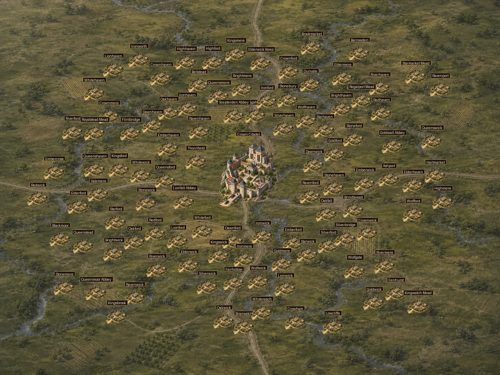
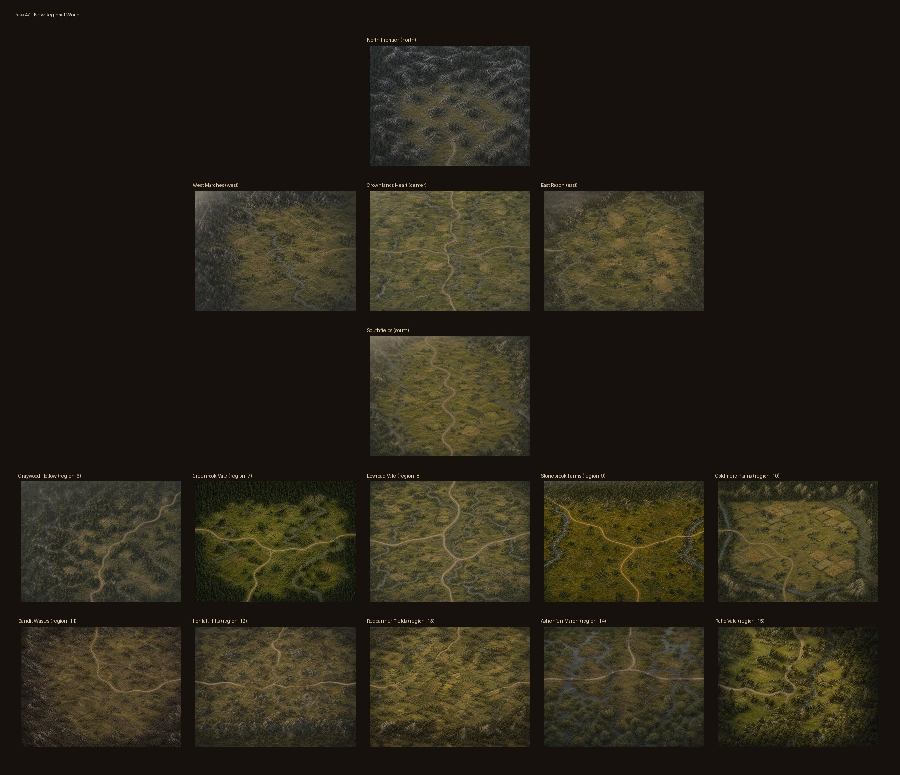
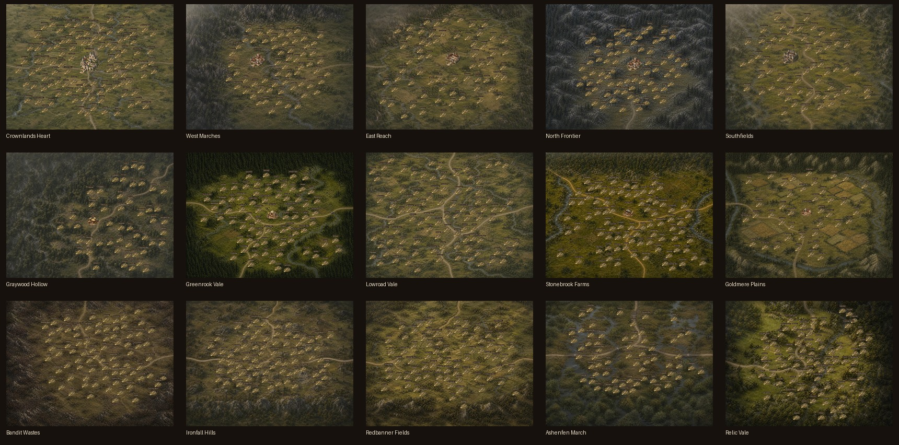
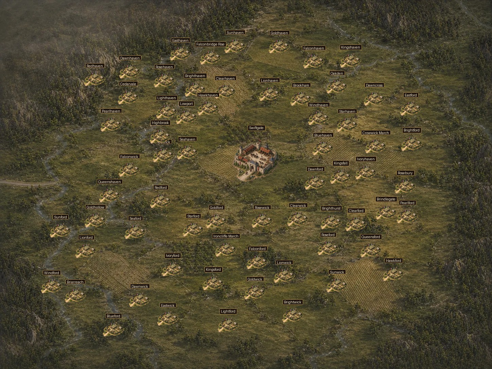
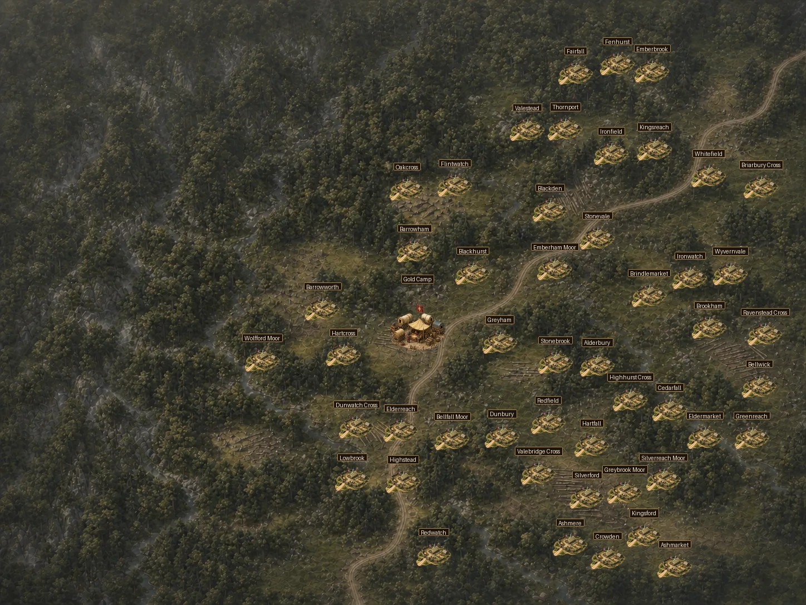
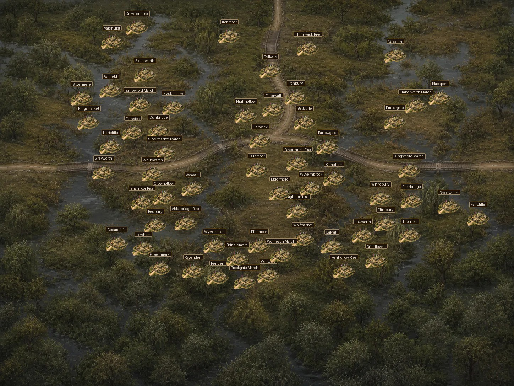
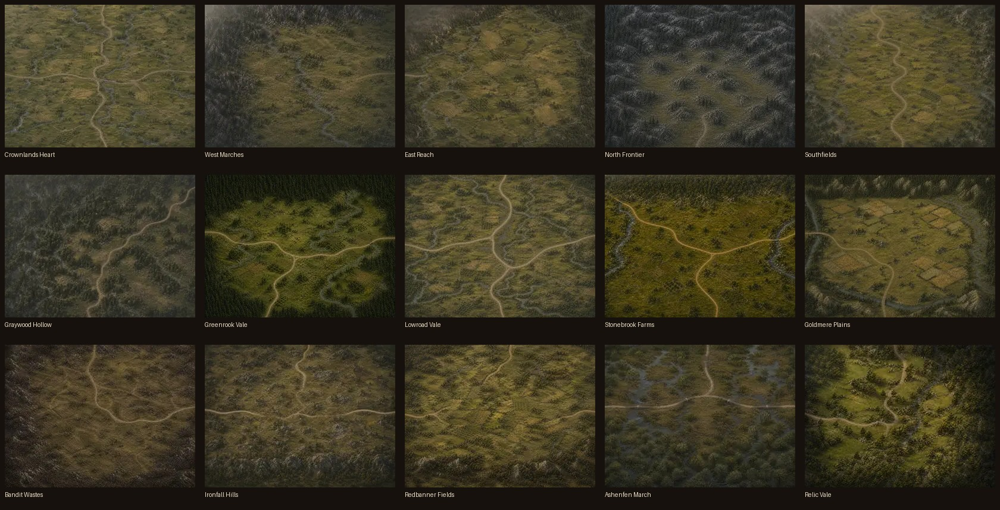
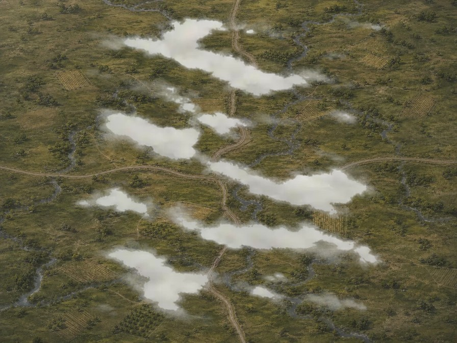

Crownlands Heart: 100-city density plus Crown Citadel.
Fifteen maps, one connected Crownlands continent. This development-only gallery compares rollback sources, final art, reciprocal edges, actual coordinate overlays, thumbnails, and the natural-mist transition.
Shared cameraShared daylightContinental geographyNo baked objectivesOne road per open edge

Every authoritative east/south neighbor pair is shown once. Vertical or horizontal seam rules mark the transition; roads need plausible continuity, not pixel-perfect stitching hidden by the mist transition.
Representative renders use real region coordinates and current 66px City, 132px Camp, 154px Stronghold, and 200px Crown Citadel visual classes.


Crownlands Heart: 100-city density plus Crown Citadel.

East Reach: city density plus Speed Stronghold.

Graywood Hollow: forest terrain plus Gold Camp.

Ashenfen March: wetland contrast and label readability.


Neutral ivory and weathered-gray low mist, shown over final terrain.
1254x1254 RGBA authoritative source; 448x448 RGBA runtime WebP.